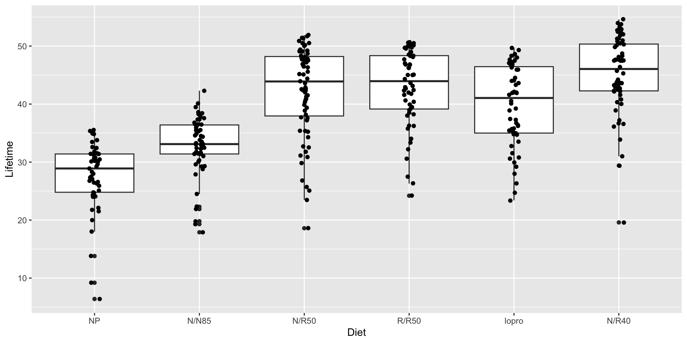
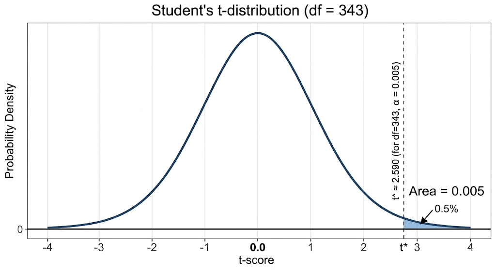

Section 5.7 and 8.2: Multiple Comparison Procedures
Treatment groups:

Diet min Q1 median Q3 max mean sd n missing
1 NP 6.4 24.800 28.90 31.40 35.5 27.40204 6.133701 49 0
2 N/N85 17.9 31.400 33.10 36.40 42.3 32.69123 5.125297 57 0
3 N/R50 18.6 37.950 43.90 48.20 51.9 42.29718 7.768195 71 0
4 R/R50 24.2 39.150 43.95 48.35 50.7 42.88571 6.683152 56 0
5 lopro 23.4 35.000 41.05 46.45 49.7 39.68571 6.991695 56 0
6 N/R40 19.6 42.275 46.05 50.35 54.6 45.11667 6.703406 60 0These are the group sample means and standard deviations.
Model:
\[ Y = \mu + \alpha_i + \epsilon \]
Fit the model.
If we perform many (all) pairwise \(t\)-tests:
Example:
10 tests at \(\alpha = .05\)
\[ FWER = 1 - (.95)^{10} \approx 0.40 \]
40% chance of at least one false positive.
Perform global ANOVA F-test
If significant, perform follow-up comparisons
Goal:
Identify which means differ while controlling error rates but no adjustment for multiple comparisons.
We use the emmeans framework (library).
These are the model-based estimates of the mean response for each group.
For one-way ANOVA, they just equal the sample means.
\[ \bar{y}_i \pm t^*_{n-I}\cdot \frac{SD}{\sqrt{n_i}} \]
Diet emmean SE df lower.CL upper.CL
NP 27.4 0.954 343 25.5 29.3
N/N85 32.7 0.885 343 31.0 34.4
N/R50 42.3 0.793 343 40.7 43.9
R/R50 42.9 0.892 343 41.1 44.6
lopro 39.7 0.892 343 37.9 41.4
N/R40 45.1 0.862 343 43.4 46.8
Confidence level used: 0.95 Equivalent to pairwise t-tests without adjustment.
\[ (\bar{y}_i - \bar{y}_j) \pm t^*_{n-I}\cdot SD\sqrt{\frac{1}{n_i} + \frac{1}{n_j}} \]
mod1 <- lm(Lifetime ~ Diet, data = micedata2)
emm <- emmeans(mod1, ~ Diet)
confint(pairs(emm, adjust = "none")) contrast estimate SE df lower.CL upper.CL
NP - (N/N85) -5.289 1.30 343 -7.848 -2.730
NP - (N/R50) -14.895 1.24 343 -17.335 -12.456
NP - (R/R50) -15.484 1.31 343 -18.053 -12.914
NP - lopro -12.284 1.31 343 -14.853 -9.714
NP - (N/R40) -17.715 1.29 343 -20.244 -15.185
(N/N85) - (N/R50) -9.606 1.19 343 -11.942 -7.270
(N/N85) - (R/R50) -10.194 1.26 343 -12.666 -7.723
(N/N85) - lopro -6.994 1.26 343 -9.466 -4.523
(N/N85) - (N/R40) -12.425 1.24 343 -14.855 -9.996
(N/R50) - (R/R50) -0.589 1.19 343 -2.936 1.759
(N/R50) - lopro 2.611 1.19 343 0.264 4.959
(N/R50) - (N/R40) -2.819 1.17 343 -5.123 -0.516
(R/R50) - lopro 3.200 1.26 343 0.718 5.682
(R/R50) - (N/R40) -2.231 1.24 343 -4.672 0.210
lopro - (N/R40) -5.431 1.24 343 -7.872 -2.990
Confidence level used: 0.95 Characteristics:
We want intervals such that
all intervals are correct with probability \(1-\alpha\)
This is called familywise confidence.
For \(m\) comparisons we want
\[ P(\text{all intervals cover the true differences}) \ge 1-\alpha \]
The Bonferroni method provides a simple solution.
If we construct \(m\) intervals:
\[ \alpha/m \]
for each comparison.
This ensures the probability of any error is no larger than \(\alpha\).
For two groups
\[ (\bar y_i - \bar y_j) \pm t^* s_p \sqrt{\frac{1}{n_i} + \frac{1}{n_j}} \]
where
\[ s_p = \sqrt{\text{MSE}} \]
and
\[ t^* = t_{\alpha/(2m),\,df_E} \]
This produces simultaneous confidence level \(100(1-\alpha)\%\).
In the Fruit Flies experiment
Number of groups: \(K = 5\)
Number of comparisons
\[ m = \frac{K(K-1)}{2} \]
\[ m = 10 \]
Desired overall level
\[ \alpha = 0.05 \]
Each comparison uses
\[ \alpha_{\text{each}} = \frac{0.05}{(2*5)} = 0.005 \]
This makes each interval wider, ensuring the overall confidence level remains \(95\%\).

contrast estimate SE df t.ratio p.value
NP - (N/N85) -5.289 1.30 343 -4.065 0.0009
NP - (N/R50) -14.895 1.24 343 -12.009 <0.0001
NP - (R/R50) -15.484 1.31 343 -11.852 <0.0001
NP - lopro -12.284 1.31 343 -9.403 <0.0001
NP - (N/R40) -17.715 1.29 343 -13.776 <0.0001
(N/N85) - (N/R50) -9.606 1.19 343 -8.088 <0.0001
(N/N85) - (R/R50) -10.194 1.26 343 -8.113 <0.0001
(N/N85) - lopro -6.994 1.26 343 -5.567 <0.0001
(N/N85) - (N/R40) -12.425 1.24 343 -10.059 <0.0001
(N/R50) - (R/R50) -0.589 1.19 343 -0.493 1.0000
(N/R50) - lopro 2.611 1.19 343 2.188 0.4402
(N/R50) - (N/R40) -2.819 1.17 343 -2.408 0.2488
(R/R50) - lopro 3.200 1.26 343 2.536 0.1751
(R/R50) - (N/R40) -2.231 1.24 343 -1.798 1.0000
lopro - (N/R40) -5.431 1.24 343 -4.377 0.0002
P value adjustment: bonferroni method for 15 tests Bonferroni controls the familywise confidence level by making each individual interval more conservative.
Advantages
Disadvantage
Goal:
Construct simultaneous confidence intervals for all pairwise differences
\[ \mu_i - \mu_j \]
among the population means.
The Tukey intervals have the form
\[ (\bar y_i - \bar y_j) \pm \frac{q^*}{\sqrt{2}}\, s_p \sqrt{\frac{1}{n_i} + \frac{1}{n_j}} \]
where
\[ s_p = \sqrt{\text{MSE}} \]
and \(q^*\) is the upper \(\alpha\) critical value from the Studentized range distribution.
The critical value \(q^*\) depends on
\(K\) = number of group means being compared
\(N-K\) = error degrees of freedom
These come directly from the ANOVA model.
If all sample sizes \(n_i\) are equal
If sample sizes differ
The Tukey critical value can be obtained using qtukey().
For the FruitFlies example:
\[ n - I = 125 - 5 = 120 \]
Thus the appropriate value is
\[ q^* \approx 3.917 \]
This value is used in the Tukey confidence interval formula
\[ (\bar y_i - \bar y_j) \pm \frac{q^*}{\sqrt{2}}, s_p \sqrt{\frac{1}{n_i} + \frac{1}{n_j}} \]
to obtain simultaneous 95% confidence intervals.
Tukey simultaneous intervals using emmeans package:
contrast estimate SE df lower.CL upper.CL
NP - (N/N85) -5.289 1.30 343 -9.018 -1.561
NP - (N/R50) -14.895 1.24 343 -18.450 -11.341
NP - (R/R50) -15.484 1.31 343 -19.228 -11.740
NP - lopro -12.284 1.31 343 -16.028 -8.540
NP - (N/R40) -17.715 1.29 343 -21.400 -14.029
(N/N85) - (N/R50) -9.606 1.19 343 -13.010 -6.202
(N/N85) - (R/R50) -10.194 1.26 343 -13.796 -6.593
(N/N85) - lopro -6.994 1.26 343 -10.596 -3.393
(N/N85) - (N/R40) -12.425 1.24 343 -15.965 -8.885
(N/R50) - (R/R50) -0.589 1.19 343 -4.009 2.832
(N/R50) - lopro 2.611 1.19 343 -0.809 6.032
(N/R50) - (N/R40) -2.819 1.17 343 -6.176 0.537
(R/R50) - lopro 3.200 1.26 343 -0.417 6.817
(R/R50) - (N/R40) -2.231 1.24 343 -5.787 1.325
lopro - (N/R40) -5.431 1.24 343 -8.987 -1.875
Confidence level used: 0.95
Conf-level adjustment: tukey method for comparing a family of 6 estimates Interpretation: If an interval does not contain 0, the means differ.
Diet emmean SE df lower.CL upper.CL .group
NP 27.4 0.954 343 24.9 29.9 1
N/N85 32.7 0.885 343 30.4 35.0 2
lopro 39.7 0.892 343 37.3 42.0 3
N/R50 42.3 0.793 343 40.2 44.4 34
R/R50 42.9 0.892 343 40.5 45.2 34
N/R40 45.1 0.862 343 42.8 47.4 4
Confidence level used: 0.95
Conf-level adjustment: sidak method for 6 estimates
P value adjustment: tukey method for comparing a family of 6 estimates
significance level used: alpha = 0.05
NOTE: If two or more means share the same grouping symbol,
then we cannot show them to be different.
But we also did not show them to be the same. Interpretation:
Groups sharing a letter are not significantly different.
| Method | Characteristics |
|---|---|
| Fisher LSD | Most liberal |
| Bonferroni | Conservative but general |
| Tukey HSD | Best for all pairwise comparisons |
Typical workflow:
ANOVA tells us
Multiple comparison methods tell us